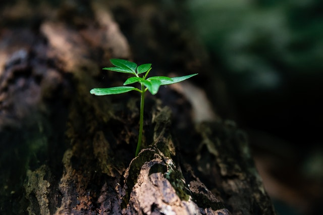
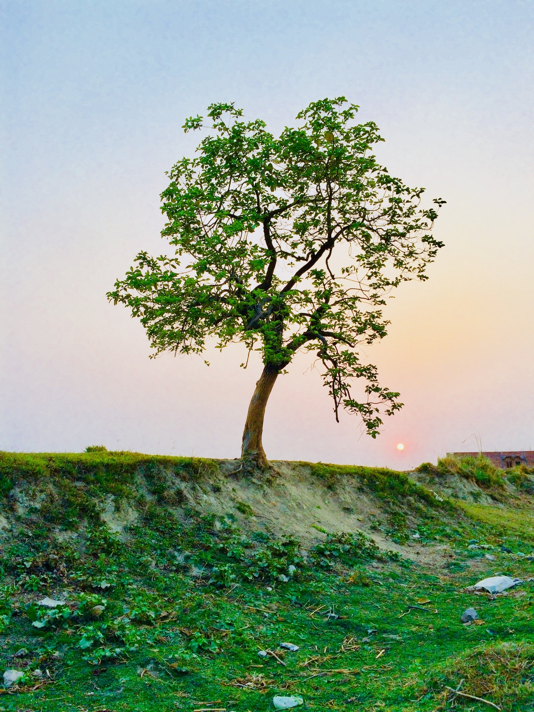
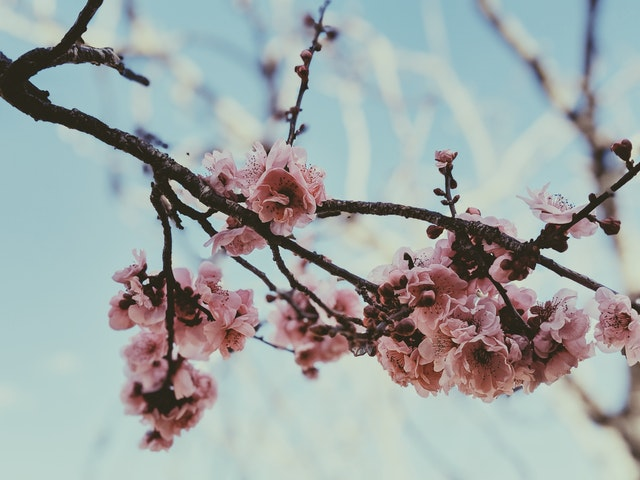
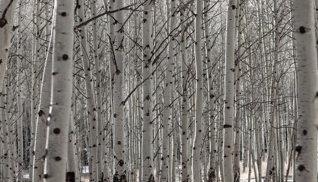
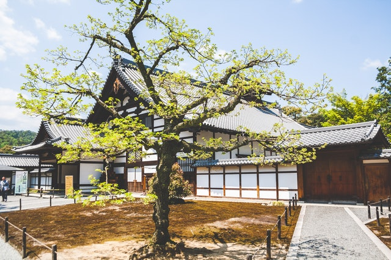
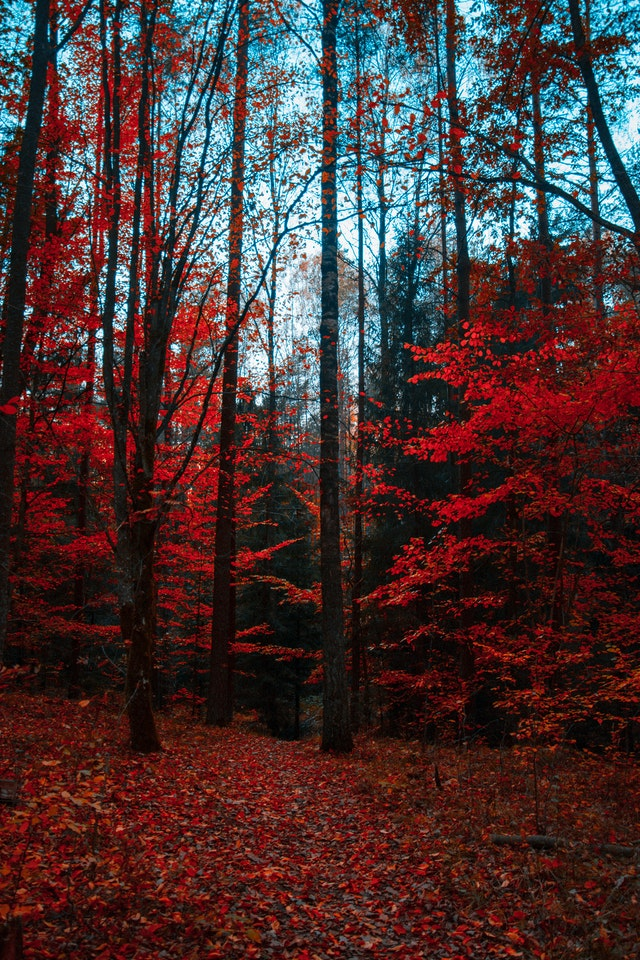
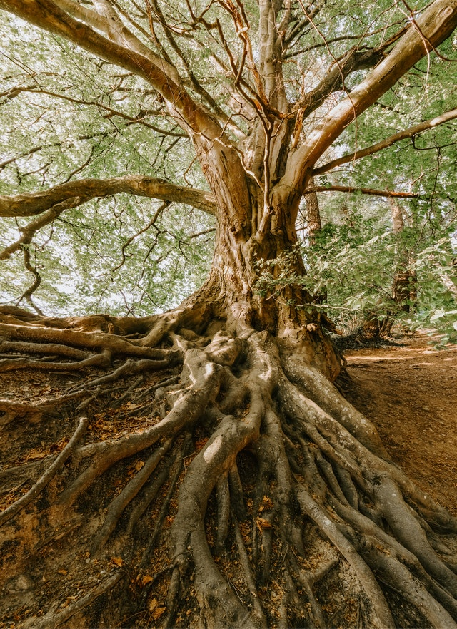
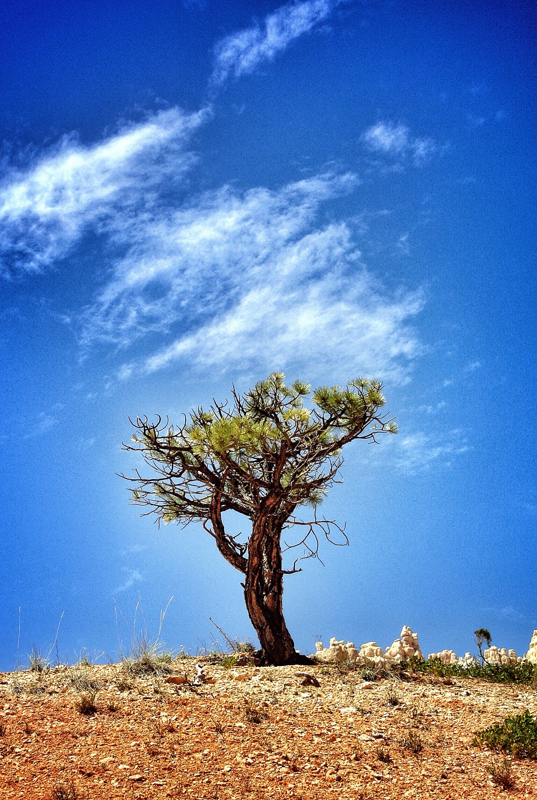

Encenillo Tree
The Encenillo Tree is a tree from the nothen part of columbia
This plant is great for
beginners it only needs 2 liter of water once a week.
It can be as tal as 10 meter if
taken care of proparly and can live for generations.
The olderst tree of Encenillo is estimated to be around 5000 years old
Cost: 2499:-
Marmalade Bush
The Marmalade Bush is from the southest part of columbian
This one of our most rarest trees,
it for the more experienced growers, it doesnt really need mutch water, in fact it needs a really dry enviorment and its easy to over water the marmalade bush.
Cost: 3999:-
Dove Tree
The Dove Tree is one of our meny japanese trees
it will only bloom for 2 weeks a year, and will have some beutiful pink flowers and great smell.
You dont really need mutch experience to take care of the dove tree, so its recommended for all kinds of growers.
Cost: 4495:-
Birch Tree
The Birch Tree is a scandinavian tree
Birch is rekommended for all users, it can sustain warm and cold climat, most of the care is given when the tree is young. Once its an adult you can just enjoy the view cause it doesnt really need mutch care at all.
Cost: 1495:-
Golden Larch
The Golden Larch Tree is from the northen parts of japan
Its a strong tree so it will survive both cold and warm climate. Make sure to water it once every month. But it will also surive as good by just standing in your garden without mutch care. This tree is a great option for beginners, and its also one of our rarest trees
Cost: 5995:-
Hornbeam
The Hornbeam Tree is a Canadian tree
On the summer it will get black leafs that will later turn to red during spring and fall.
It doenst really need mutch care and will mostly take care of it self. But with it uniqe color characteristics its one of our favorit here on The little shop of tree.
Cost: 5995:-
Baobab Tree
The Baobab Tree is an australian tree
Its an expert in surviving dry climates, and wont need mutch water. But it can also stand against the cold weather in the more scandinavian parts of the world. It will grow 50 meters tal and will evlove giant roots. During its first stages in life it will need mutch care and there for a more experienced grower is needed.
Cost: 8995:-
Acacia Tree
Acacia Tree is an Austrialien tree
From the dry parts of Austriala this excotic tree can survive almost any dry climate, but the wet and cold isnt something this one enjoys, there for we recommend Acacia to the more experienced growers.On the summer it will grow coffe berrys, and if your hand you can grow your very own coffe.
Cost: 5995:-